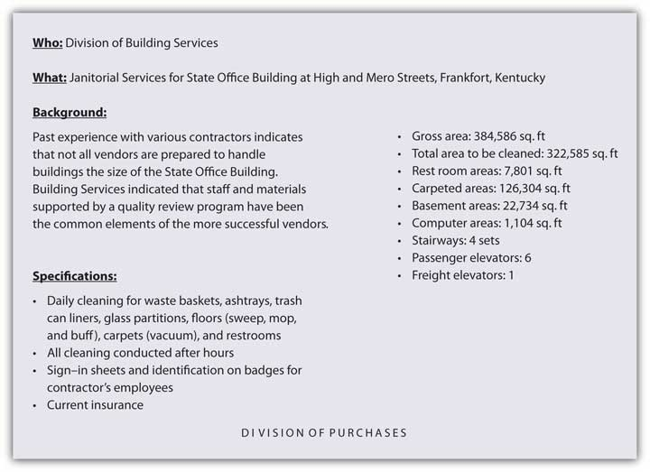
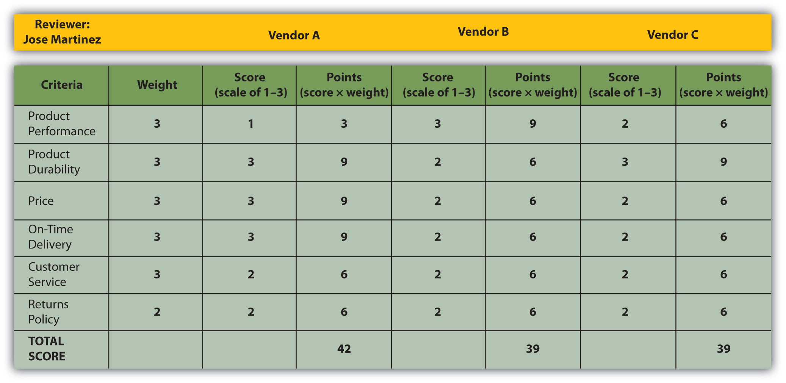

Next, let’s look at the stages in the B2B buying process. They are similar to the stages in the consumer’s buying process.
1. A need is recognized. Someone recognizes that the organization has a need that can be solved by purchasing a good or service. Users often drive this stage, although others can serve the role of initiator. In the case of the electronic textbook, it could be, for example, the professor assigned to teach the online course. However, it could be the dean or chairman of the department in which the course is taught.
2. The need is described and quantified. Next, the buying center, or group of people brought together to help make the buying decision, work to put some parameters around what needs to be purchased. In other words, they describe what they believe is needed, the features it should have, how much of it is needed, where, and so on. For more technical or complex products the buyer will define the product’s technical specifications. Will an off-the-shelf product do, or must it be customized?
Users and influencers come into play here. In the case of our electronic book, the professor who teaches the online course, his teaching assistants, and the college’s information technology staff would try to describe the type of book best suited for the course. Should the book be posted on the Web as this book is? Should it be downloadable? Maybe it should be compatible with Amazon’s Kindle. Figure 4.6 "An Example of Product Specifications Developed for a B2B Purchase" shows the specifications developed for a janitorial-services purchase by the state of Kentucky.
Figure 4.6 An Example of Product Specifications Developed for a B2B Purchase
3. Potential suppliers are searched for. At this stage, the people involved in the buying process seek out information about the products they are looking for and the vendors that can supply them. Most buyers look online first to find vendors and products, then attend industry trade shows and conventions and telephone or e-mail the suppliers with whom they have relationships. The buyers might also consult trade magazines, the blogs of industry experts, and perhaps attend Webinars conducted by vendors or visit their facilities. Purchasing agents often play a key role when it comes to deciding which vendors are the most qualified. Are they reliable and financially stable? Will they be around in the future? Do they need to be located near the organization or can they be in another region of the country or in a foreign country? The vendors that don’t make the cut are quickly eliminated from the running.
4. Qualified suppliers are asked to complete responses to requests for proposal (RFPs). Each vendor that makes the cut is sent a request for proposal (RFP)An invitation to submit a bid to supply the good or service., which is an invitation to submit a bid to supply the good or service. An RFP outlines what the vendor is able to offer in terms of its product—its quality, price, financing, delivery, after-sales service, whether it can be customized or returned, and even the product’s disposal, in some cases. Good sales and marketing professionals do more than just provide basic information to potential buyers in RFPs. They focus on the buyer’s problems and how to adapt their offers to solve those problems.
Oftentimes the vendors formally present their products to the people involved in the buying decision. If the good is a physical product, the vendors generally provide the purchaser with samples, which are then inspected and sometimes tested. They might also ask satisfied customers to make testimonials or initiate a discussion with the buyer to help the buyer get comfortable with the product and offer advice on how best to go about using it.
5. The proposals are evaluated and supplier(s) selected. During this stage, the RFPs are reviewed and the vendor or vendors selected. RFPs are best evaluated if the members agree on the criteria being evaluated and the importance of each. Different organizations will weigh different parts of a proposal differently, depending on their goals and the products they purchase. The price might be very important to some sellers, such as discount and dollar stores. Other organizations might be more focused on top-of-the-line goods and the service a seller provides. Recall that the maker of Snapper mowers and snowblowers was more focused on purchasing quality materials to produce top-of-the-line equipment that could be sold at a premium. Still other factors include the availability of products and the reliability with which vendors can supply them. Reliability of supply is extremely important because delays in the supply chain can shut down a company’s production of goods and services and cost the firm its customers and reputation.
For high-priced, complex products, after-sales service is likely to be important. A fast-food restaurant might not care too much about the after-sales service for the paper napkins it buys—just that they are inexpensive and readily available. However, if the restaurant purchases a new drive-thru ordering system, it wants to be assured that the seller will be on hand to repair the system if it breaks down and perhaps train its personnel to use the system.
A scorecard approach can help a company rate the RFPs. Figure 4.7 "A Scorecard Used to Evaluate RFPs" is a simple example of a scorecard completed by one member of a buying team. The scorecards completed by all the members of the buying team can then be tabulated to help determine the vendor with the highest rating.
Figure 4.7 A Scorecard Used to Evaluate RFPs
Selecting Single versus Multiple Suppliers. Sometimes organizations select a single supplier to provide the good or service. This can help streamline a company’s paperwork and other buying processes. With a single supplier, instead of negotiating two contracts and submitting two purchase orders to buy a particular offering, the company only has to do one of each. Plus, the more the company buys from one vendor, the bigger the volume discount it gets. Single sourcing can be risky, though, because it leaves a firm at the mercy of a sole supplier. What if the supplier doesn’t deliver the goods, goes out of business, or jacks up its prices? Many firms prefer to do business with more than one supplier to avoid problems such as these. Doing business with multiple suppliers keeps them on their toes. If they know their customers can easily switch their business over to another supplier, they are likely to compete harder to keep the business.
6. An order routine is established. This is the stage in which the actual order is put together. The order includes the agreed-upon price, quantities, expected time of delivery, return policies, warranties, and any other terms of negotiation.Ron Brauner, “The B2B Process: Eight Stages of the Business Sales Funnel,” Ron Brauner Integrated Marketing (Web site), July 31, 2008, http://www.ronbrauner.com/?p=68 (accessed December 13, 2009). The order can be made on paper, online, or sent electronically from the buyer’s computer system to the seller’s. It can also be a one-time order or consist of multiple orders that are made periodically as a company needs a good or service. Some buyers order products continuously by having their vendors electronically monitor their inventory for them and ship replacement items as the buyer needs them. (We’ll talk more about inventory management in Chapter 9 "Using Supply Chains to Create Value for Customers".)
7. A postpurchase evaluation is conducted and the feedback provided to the vendor. Just as consumers go through an evaluation period after they purchase goods and services, so do businesses. The buying unit might survey users of the product to see how satisfied they were with it. Cessna Aircraft Company, a small U.S. airplane maker, routinely surveys the users of the products it buys so they can voice their opinions on a supplier’s performance.“Cessna Expands Scorecard to Indirect Suppliers,” Purchasing 138, no. 6 (June 2009): 58.
Some buyers establish on-time performance, quality, customer satisfaction, and other measures for their vendors to meet, and provide those vendors with the information regularly, such as trend reports that show if their performance is improving, remaining the same, or worsening. (The process is similar to a performance evaluation you might receive as an employee.) For example, Food Lion shares a wide variety of daily retail data and performance calculations with its suppliers in exchange for their commitment to closely collaborate with the grocery-store chain.
Keep in mind that a supplier with a poor performance record might not be entirely to blame. The purchasing company might play a role, too. For example, if the U.S. Postal Service contracts with FedEx to help deliver its holiday packages on time, but a large number of the packages are delivered late, FedEx may or may not be to blame. Perhaps a large number of loads the U.S. Postal Service delivered to FedEx were late, weather played a role, or shipping volumes were unusually high. Companies need to collaborate with their suppliers to look for ways to improve their joint performance. Some companies hold annual symposiums with their suppliers to facilitate cooperation among them and to honor their best suppliers.William Copacino, “Unlocking Value through the Supplier Scorecard,” Supply Chain Management Review, July 8, 2009.
To some extent the stages an organization goes through and the number of people involved depend on the buying situation. Is this the first time the firm has purchased the product or the fiftieth? If it’s the fiftieth time, the buyer is likely to skip the search and other phases and simply make a purchase. A straight rebuyWhen a purchaser buys the same product in the same quantities from the same vendor. is a situation in which a purchaser buys the same product in the same quantities from the same vendor. Nothing changes, in other words. Postpurchase evaluations are often skipped, unless the buyer notices an unexpected change in the offering such as a deterioration of its quality or delivery time.
Sellers like straight rebuys because the buyer doesn’t consider any alternative products or search for new suppliers. The result is a steady, reliable stream of revenue for the seller. Consequently, the seller doesn’t have to spend a lot of time on the account and can concentrate on capturing other business opportunities. Nonetheless, the seller cannot ignore the account. The seller still has to provide the buyer with top-notch, reliable service or the straight-rebuy situation could be jeopardized.
If an account is especially large and important, the seller might go so far as to station personnel at the customer’s place of business to be sure the customer is happy and the straight-rebuy situation continues. IBM and the management consulting firm Accenture station employees all around the world at their customers’ offices and facilities.
By contrast, a new-buyWhen a firm purchases a product for the first time. selling situation occurs when a firm purchases a product for the first time. Generally speaking, all the buying stages we described in the last section occur. New buys are the most time consuming for both the purchasing firm and the firms selling to them. If the product is complex, many vendors and products will be considered, and many RFPs will be solicited.
New-to-an-organization buying situations rarely occur. What is more likely is that a purchase is new to the people involved. For example, a school district owns buildings. But when a new high school needs to be built, there may not be anyone in management who has experience building a new school. That purchase situation is a new buy for those involved.
A modified rebuyWhen a company wants to buy the same type of product it has in the past but make some modifications to it. occurs when a company wants to buy the same type of product it has in the past but make some modifications to it. Maybe the buyer wants different quantities, packaging, or delivery, or the product customized slightly differently. For example, your instructor might have initially adopted this textbook “as is” from its publisher, Unnamed Publisher, but then decided to customize it later with additional questions, problems, or content that he or she created or that was available from Unnamed Publisher.
A modified rebuy doesn’t necessarily have to be made with the same seller, however. Your instructor may have taught this course before, using a different publisher’s book. High textbook costs, lack of customization, and other factors may have led to dissatisfaction. In this case, she might visit with some other textbook suppliers and see what they have to offer. Some buyers routinely solicit bids from other sellers when they want to modify their purchases in order to get sellers to compete for their business. Likewise, savvy sellers look for ways to turn straight rebuys into modified buys so they can get a shot at the business. They do so by regularly visiting with customers and seeing if they have unmet needs or problems a modified product might solve.
The stages in the B2B buying process are as follows: Someone recognizes that the organization has a need that can be solved by purchasing a good or service. The need is described and quantified. Qualified suppliers are searched for, and each qualified supplier is sent a request for proposal (RFP), which is an invitation to submit a bid to supply the good or service. The proposals suppliers submit are evaluated, one or more supplier(s) selected, and an order routine with each is established. A postpurchase evaluation is later conducted and the feedback provided to the suppliers. The buying stages an organization goes through often depend on the buying situation—whether it’s a straight rebuy, new buy, or modified rebuy.